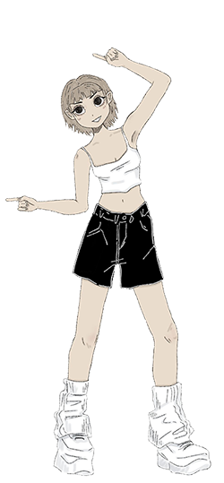
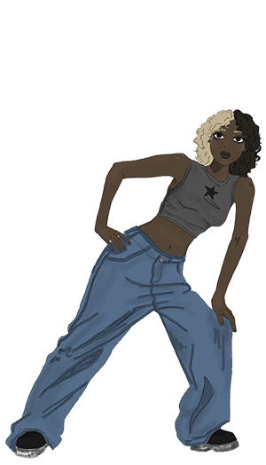
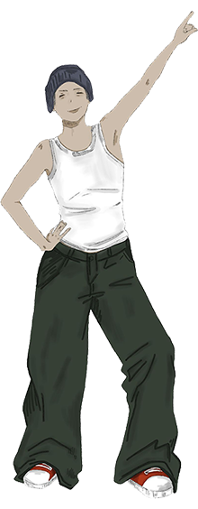
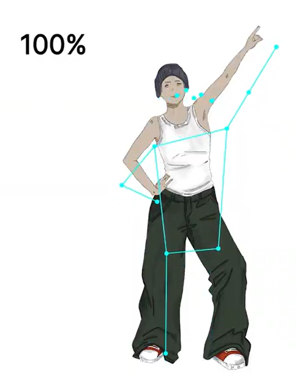

In diesem Projekt habe ich die Teachable Machine genutzt, um ein Spiel zu entwickeln, bei dem man Posen nachahmen muss. Die Idee basiert auf dem Spiel Just Dance.
Mein erster Schritt bestand darin, die Teachable Machine so zu trainieren, dass sie verschiedene Posen erkennen und unterscheiden kann. Dafür habe ich mich selbst fotografiert und pro Pose etwa 50 Bilder aus verschiedenen Winkeln und mit unterschiedlichen Körperhaltungen aufgenommen.
Nachdem die Teachable Machine die Posen zuverlässig erkennen konnte, habe ich den generierten Code heruntergeladen und ihn in eine Website integriert. Die Website beginnt mit einer Einführung und einem Countdown, der den Start des Spiels einleitet. Während des Spiels werden die verschiedenen Posen, die ich illustriert habe, angezeigt.



Darüber sieht man ein Skelettmodell des Spielers, das von der Kamera erfasst wird, sowie eine Prozentanzeige, die zeigt, wie gut die Pose nachgeahmt wurde. Man muss mindestens 80 % erreichen, um zur nächsten Pose zu gelangen.

Andernfalls heißt es "Game Over" und das Spiel beginnt von vorne. Hat man alle drei Posen erfolgreich gemeistert, wird man zu einer "You Win"-Seite weitergeleitet, von der aus man das Spiel erneut starten kann.
Bei der Erstellung der Website gab es einige Herausforderungen. Eine Pose wurde plötzlich nicht mehr erkannt, obwohl sie in der Teachable Machine zuvor funktioniert hatte. Zudem war es schwierig, das Design der Posenanzeige und der Website harmonisch zu gestalten.
In Zukunft würde ich gerne einen Highscore und ein Punktesystem integrieren, damit das Spiel auch Gegeneinander gespielt werden kann. Dafür müssten allerdings mehr Posen problemlos funktionieren.
Zum Projekt!